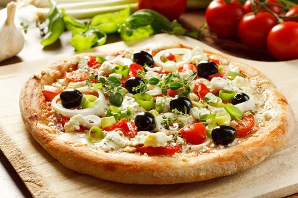

Since its humble beginnings in Italy, pizza has gone through numerous transformations to become the dish that so many people know and love today. But if you’re just opening your first pizza place or want to add a pizza oven in your restaurant, it can be difficult to decide what style of pizza your restaurant will make. We discuss the different types of pizza, their history, and what you’ll need to make them, so you can start serving up delicious slices to your guests.
-
Neapolitan Pizza
Neapolitan is the original pizza. This delicious pie dates all the way back to 18th century in Naples, Italy. During this time, the poorer citizens of this seaside city frequently purchased food that was cheap and could be eaten quickly. Luckily for them, Neapolitan pizza was affordable and readily available through numerous street vendors.
Variations of Neapolitan Pizza
Today there are three official variants of Neapolitan pizza: Pizza Marinara: Features tomatoes, garlic, oregano, and extra virgin olive oil. Pizza Margherita: Features tomatoes, sliced mozzarella, basil, and extra virgin olive oil. Pizza Margherita extra: Features tomatoes, mozzarella from Campania, basil, and extra virgin olive oil.
-
Chicago Pizza

Chicago pizza, also commonly referred to as deep-dish pizza, gets its name from the city it was invented in. During the early 1900’s, Italian immigrants in the windy city were searching for something similar to the Neapolitan pizza that they knew and loved. Instead of imitating the notoriously thin pie, Ike Sewell had something else in mind. He created a pizza with a thick crust that had raised edges, similar to a pie, and ingredients in reverse, with slices of mozzarella lining the dough followed by meat, vegetables, and then topped with a can of crushed tomatoes. This original creation led Sewell to create the now famous chain restaurant, Pizzeria Uno.
Chicago Pizza Traditional Toppings:
Generally, the toppings for Chicago pizza are ground beef, sausage, pepperoni, onion, mushrooms, and green peppers, placed underneath the tomato sauce. Some locations will finish off their pizzas with a sprinkle of Parmesan cheese across the tomato sauce.
-
New York-Style Pizza
With its characteristic large, foldable slices and crispy outer crust, New York-style pizza is one of America’s most famous regional pizza types. Originally a variation of Neapolitan style pizza, the New York slice has taken on a fame all its own, with some saying its unique flavor has to do with the minerals present in New York’s tap water supply.
New York-Style Pizza Traditional Toppings:
New York-style pizza usually features tomato sauce and mozzarella cheese. Unlike its thin crust counterpart, the Neapolitan, New York-style pizzas can handle a wide range of additional toppings, from pepperoni and sausage to mushroom and anchovies. While this style of pizza can have virtually any topping added to it, it's common to find pizza lovers topping New York pizza with condiments, like oregano, red pepper flakes, Parmesan cheese, and garlic powder.
-
Sicilian Pizza

Sicilian pizza, also known as "sfincione," provides a thick cut of pizza with pillowy dough, a crunchy crust, and robust tomato sauce. This square-cut pizza is served with or without cheese, and often with the cheese underneath the sauce to prevent the pie from becoming soggy. Sicilian pizza was brought to America in the 19th century by Sicilian immigrants and became popular in the United States after the Second World War.
Sicilian Pizza Traditional Toppings:
Sicilian pizzas are often topped with bits of tomato, onion, anchovies, and herbs.
-
Greek Pizza
Greek pizza was created by Greek immigrants who came to America and were introduced to Italian pizza. Greek-style pizza, especially popular in the New England states, features a thick and chewy crust cooked in shallow, oiled pans, resulting in a nearly deep-fried bottom. While this style has a crust that is puffier and chewier than thin crust pizzas, it’s not quite as thick as a deep-dish or Sicilian crust.
Greek Pizza Traditional Toppings:
Greek pizza is usually heavier on the sauce than the cheese. The sauce typically has a tangy tomato paste with a strong oregano flavor. It is often only topped with cheese, which is usually a mix of mozzarella and cheddar or provolone. It may feature a variety of non-Greek or Greek toppings, such as feta cheese, black olives, and red onion.
-
California Pizza
California pizza, or gourmet pizza, is known for its unusual ingredients. This pizza got its start back in the late 1970’s when Chef Ed LaDou began experimenting with pizza recipes in the classic Italian restaurant, Prego. He created a pizza with mustard, ricotta, pate, and red pepper, and by chance, served it to Wolfgang Puck. Impressed with LaDou’s innovative pie, Puck invited him to be a head pizza chef at his restaurant. It was here that LaDou came up with over 250 unique pizza recipes that eventually formed the menu of the chain restaurant California Pizza Kitchen.
California Pizza Traditional Toppings:
When it comes to California pizza, there's no such thing as traditional toppings. This lack of specificity allows you to get inventive. You can include anything from chicken and artichokes to goat cheese and egg.
-
Detroit Pizza
Reflecting the city’s deep ties to the auto industry, Detroit-style pizza was originally baked in a square automotive parts pan in the 1940’s. Detroit pizza is first topped with pepperoni, followed by brick cheese which is spread to the very edges of the pan, yielding a caramelized cheese perimeter. Sauce is then spooned over the pizza, an order similar to Chicago-style pizza. This pizza features a thick, extra crispy crust that is tender and airy on the inside.
Detroit Pizza Traditional Toppings:
Detroit pizza traditionally features pepperoni, brick cheese (usually Wisconsin brick cheese), and tomato sauce. Other typical toppings include mushrooms and olives.